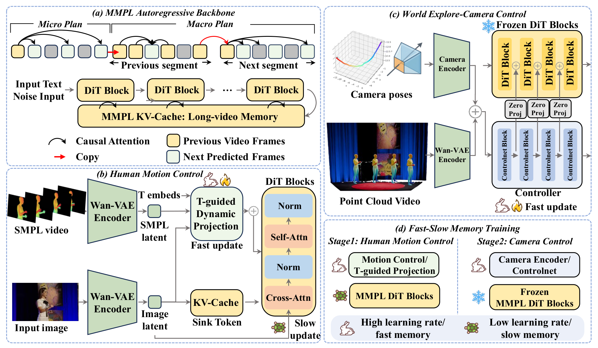
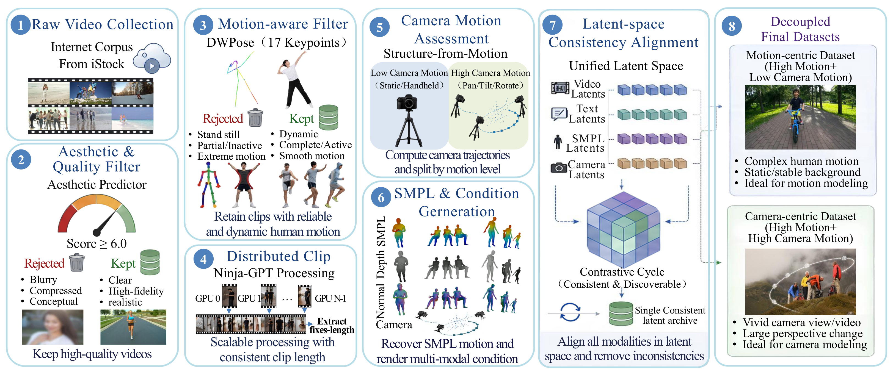

Fast Autoregressive Video Generation with Compositional Human-Camera Control
Simulate controllable real-world dynamics over long horizons — with precise human motion and coherent camera exploration in a single autoregressive world model.
Building interactive world models requires not only visually realistic videos, but also simulating controllable real-world dynamics over long temporal horizons. Autoregressive video generation provides a scalable foundation for such simulation, yet maintaining temporal stability over extended rollouts is fundamentally hard — small prediction errors accumulate and quickly degrade long-horizon generation.
This challenge intensifies under heterogeneous controls such as human motion and camera trajectories, where signals interfere and destabilize the video prior. We present Directing the World, a fast autoregressive framework that decouples the learning of dynamic control factors while preserving a unified autoregressive prior — enabling stable long-horizon generation, precise human-motion control, and coherent camera-controlled world dynamics.
This isn't a static demo — it's the control surface. Drag the sliders, flip the modules, and watch the simulated world respond in real time. Every dial maps to a real lever of the framework.
A two-stage autoregressive ControlNet-based framework — learn human-motion control under static cameras, then progressively introduce camera-trajectory control on top of the acquired motion prior.

Figure 1. Controllable autoregressive framework: MMPL backbone · SMPL human-motion control with t-guided projection · causal-aligned camera control · Fast–Slow Memory training.

Figure 2. Dataset construction: 20M iStock videos → aesthetic & motion filtering → distributed condition extraction (normal/depth/SMPL) → SfM camera assessment → unified-latent-space alignment → decoupled motion-centric & camera-centric subsets.
A Plan-then-Populate autoregressive backbone that predicts sparse planning frames (including the terminal anchor) to constrain each block, connecting consecutive segments into temporally consistent long videos with stable world memory.
SMPL sequences injected as structured 3D guidance via a t-guided Dynamic Projection that adapts motion conditions to timestep-dependent denoising latents — coarse-to-fine control that also supports simultaneous multi-person motion.
A camera pathway that decouples global Plücker-ray trajectory encoding from block-local feature injection — preserving long-range trajectory understanding while staying temporally aligned with block-wise autoregressive generation.
A differential learning-rate strategy: self/cross-attention layers stay slow to preserve the long-video prior, while new control modules adapt fast — stabilizing controllable post-training and reducing signal interference.
You don't just generate a clip — you direct a world. Directing the World lets you choreograph multiple human agents simultaneously, each driven by its own SMPL motion script, all moving through one persistent, camera-explored scene.
Each clip below shows the rendered SMPL motion script (the actor's blocking) feeding the generated world. Hover to focus your lens — the t-guided projection keeps every actor on mark while the world stays coherent.
Evaluated on APRIL-AIGC/UltraVideo-Long under motion-only, camera-only, and joint motion-camera settings. Directing the World achieves the best overall score with strong temporal stability and camera fidelity.
| Method | Control | Overall Score | Temporal | Motion | Camera | |||||
|---|---|---|---|---|---|---|---|---|---|---|
| Refined | Motion | Camera | Consist | Quality | Motion Err. | ATE | RPE | RRE | ||
| FunCamera | — | — | ✓ | 3.401 | 86.59 | 59.77 | 0.213 | 0.601 | 0.101 | 0.970 |
| FunMotion | — | ✓ | — | 3.445 | 91.76 | 62.52 | 0.184 | — | — | — |
| WanMove | — | ✓ | ✓ | 3.401 | 89.67 | 64.23 | 0.194 | 0.669 | 0.077 | 0.685 |
| Uni3C | ✓ | ✓ | ✓ | 3.445 | 88.65 | 56.07 | 0.151 | 0.482 | 0.063 | 0.722 |
| ★ Ours | ✓ | ✓ | ✓ | 3.868 | 90.25 | 62.98 | 0.161 | 0.532 | 0.070 | 0.349 |
★ Best 2nd Best · "Refined" = fine-grained controllability beyond coarse trajectory-level guidance. Metrics omitted where a method doesn't support the control.
↳ MOVE YOUR MOUSE OVER THE MONITOR WALL TO STEER THE VIEW
Built from 20M public iStock videos with synchronized video, text, human-motion (SMPL) and camera-trajectory annotations — filtered and aligned in a unified latent space.
High human motion · low camera motion · static/stable backgrounds — ideal for learning SMPL-to-video control.
High human motion · high camera motion · vivid viewpoints and large perspective change — for world-exploration camera control.
@article{wang2026directing, title = {Directing the World: Fast Autoregressive Video Generation with Compositional Human-Camera Control}, author = {Wang, Haoyuan and Chen, Yabo and Huang, Haibin and Zhang, Chi and Li, Xuelong}, journal = {IEEE Transactions on Multimedia (TMM)}, volume = {XX}, number = {XX}, year = {2026} }